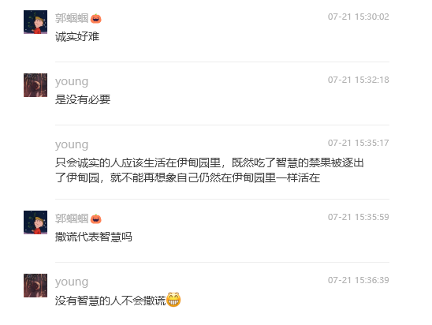
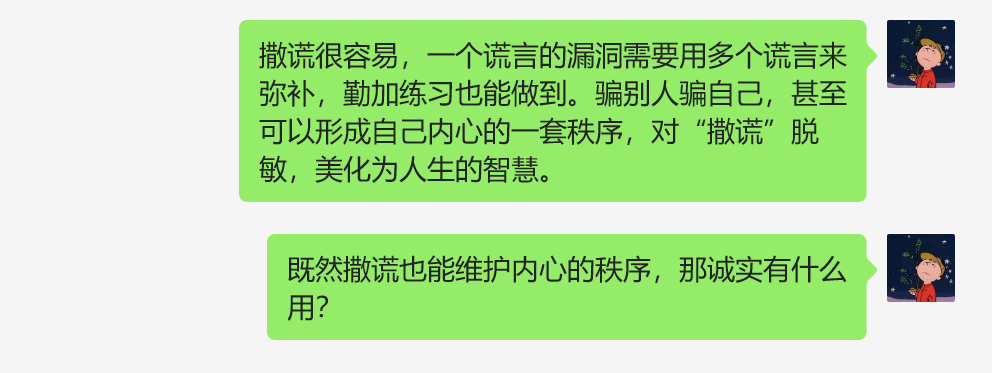
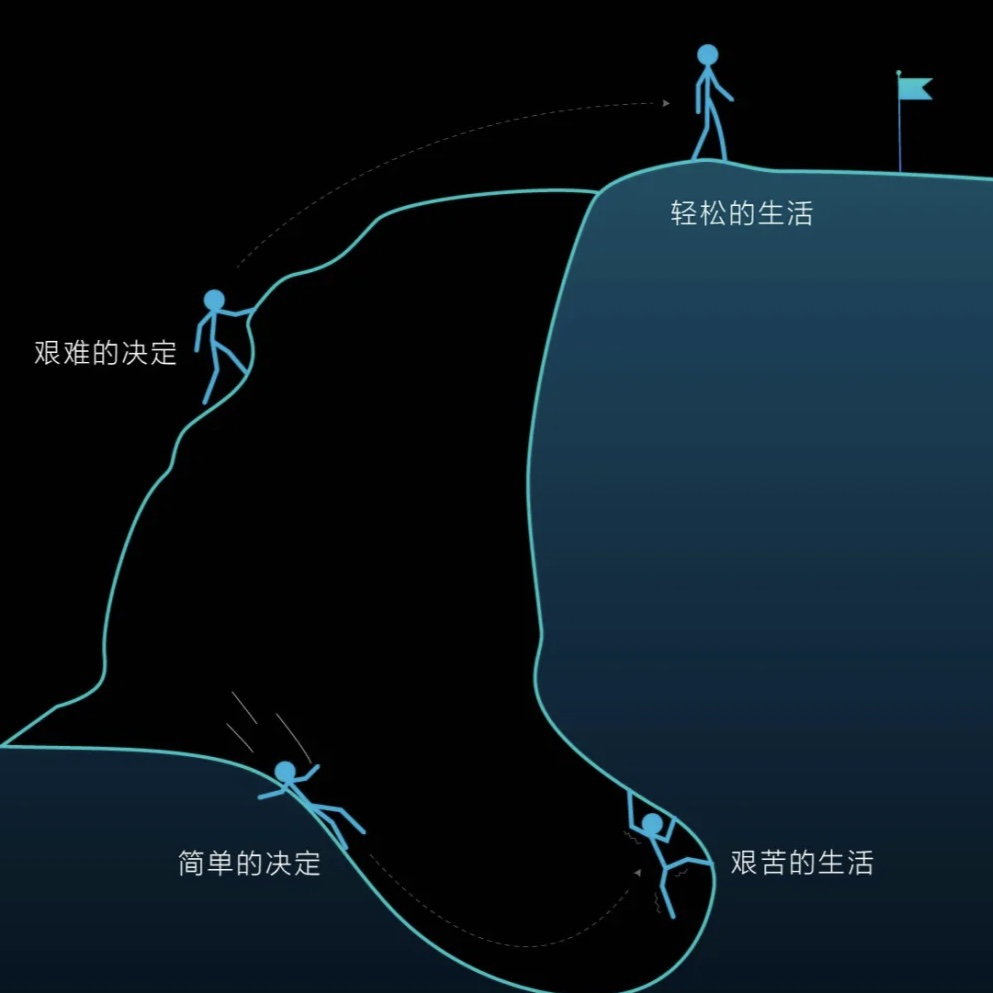

07/15-07/21，2024年第29周。
- 本周向家人坦白了学业和工作的事，进而对诚实和内心秩序有了进一步的思考；
- 第一次单独和长辈喝酒，意识到了必须接受身份转变了；
- 看了电影《抓娃娃》，并不是我喜欢的一类喜剧电影；
- 受到一张图的启发，决心要慎重对待人生大大小小的决定。
坦白
向家人坦白了学业和工作的事情。其实事情没那么顺利，是老妈先得知了工作“解约”的事情，当面质问我，并数落了一番我的隐瞒。坦白了事实后，压在心里的石头落下了，感觉到松了一口气。
回想为了掩盖一个谎言而编造的谎言，意识到人世间的生存，为了欲望的达成，或者避免痛苦，总会自觉或不自觉地自欺欺人。和朋友H交流这些，又聊了聊道德和内心秩序，H说难以理解。怎么可能不懂呢？我想H和我处在同一处境，而承认这一点需要巨大的勇气。

很长时间以来我是不会想这些事情的，只是原本的秩序被打破就很难恢复平静了。今天的经历让我意识到，谎言编织出的秩序下，需要更本质的内心秩序。

翻出《卡拉马佐夫兄弟》的笔记来看，宗教大法官一章，感觉句句灵魂拷问。明白了为什么19世纪妥翁还在写宗教，21世纪的人还在看这样一本关于宗教的书。宗教渐渐式微了，但宗教所关心的内心的秩序会是文学和人类永远的主题——人终究还是要面对这些问题。
诚实很难，诚实地对待他人，诚实地对待自己，需要勇气，更需要智慧。
第一次单独和长辈喝酒的经历
周六晚上留在姨父家吃饭，喝了两瓶啤酒。拿到酒杯时有点手足无措——第一次单独和别人喝酒，还是和一个长辈，在这样的酒桌上当主角，担心失了分寸，所以多少有点小心翼翼。
但我已经过了愣头青的阶段了，对酒桌文化有基本的了解，也积累了一些察言观色的经验，因此在遇到问题时能够较为自如地调整。开始时我自己闷头喝了半杯，意识到不太对，看到姨父摸了摸杯子没有拿起来，我便在第二次提杯的时候碰了上去，说了些感谢的话。之后的一个小时便在这样的提杯碰杯后度过，我也渐渐掌握了在言语交流中提杯的时机。和姨父相当熟悉了，亲戚间叙叙旧，不是应酬也没有社交压力，因此一夜过的轻松愉快。
回想从小到大的家庭饭局里，一大家子人围在一张大桌旁拉家常，几个姨父间推杯换盏，我一直是坐在一旁闷头吃饭的小辈，甚少去注意成人世界的弯弯绕绕。这一次和姨父喝酒像是一场演练，我意识到作为在酒桌上要提杯的成年男性——我到了必须面对这种身份转变的时刻了。
电影《抓娃娃》
《抓娃娃》，沈腾玛丽主演，观察到口碑和票房都不错。我自己的感觉是优缺点都很“开心麻花”，确实好笑，也确实空洞，一个富人通过穷养来望子成才，这样的故事和我的现实认知相差太远。
然而一个问题回荡在我的脑海里，喜剧电影图一乐就行干嘛纠结现实逻辑？关于这一点，我在枪稿的影评《这部强碱性搞笑片，腐蚀了谁？｜杨殳专栏》中寻找到了答案。在我印象里专业影评并不待见开心麻花，不出所料文章对这部电影一顿喷，我观感上虽然没有这么义愤填膺，但还是认同对这一类电影的批评：
“好笑”和“喜剧”也不是一回事儿。恰恰因为是喜剧，才更要基于现实，刺穿虚假。
我想正是这一标准，才是让我更喜欢另一类喜剧电影的原因。
做艰难的决定

小红书看到的一张图，原本是讲自律的，很容易得出一句警句，做艰难的决定，过轻松的生活。而不是做简单的决定，过艰苦的生活。
有点鸡汤，也过于简化，人生中大大小小的选择和坎坷磨难并总是一一对应。但触动我的地方在于，这总让我联想到过往的不如意，联想到许多悔恨，联想到弥补遗憾而付出的汗水和泪水，多多少少来自于一个又一个简单的仓促的决定。
往者不可谏，来者犹可追。如果硬要说经历的苦难也是财富，那我想唯一不辜负这些财富的方式就是，在下一次滑向艰苦的生活的时刻来临之际，慎重地做艰难的决定。